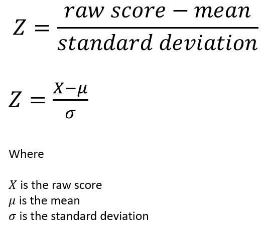
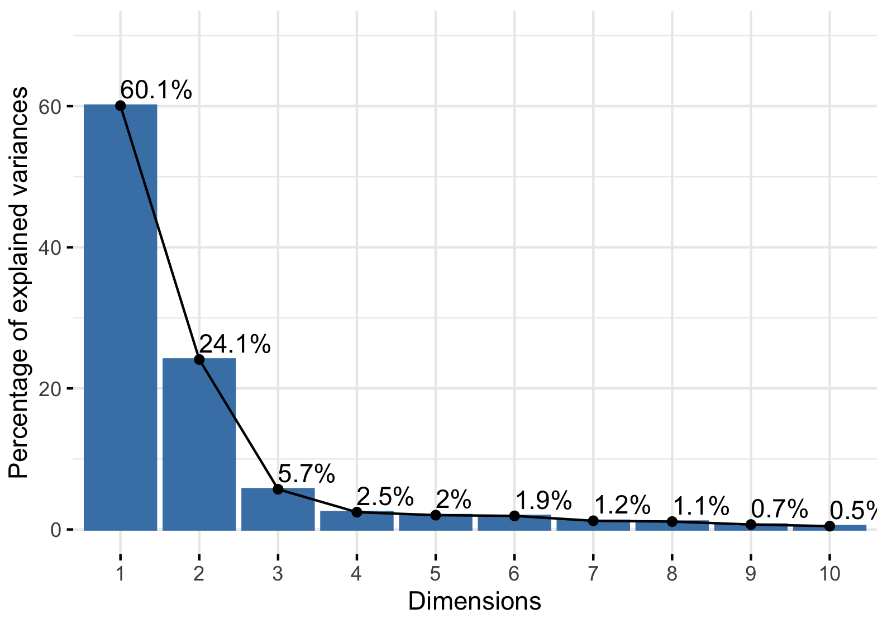
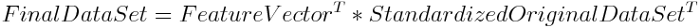
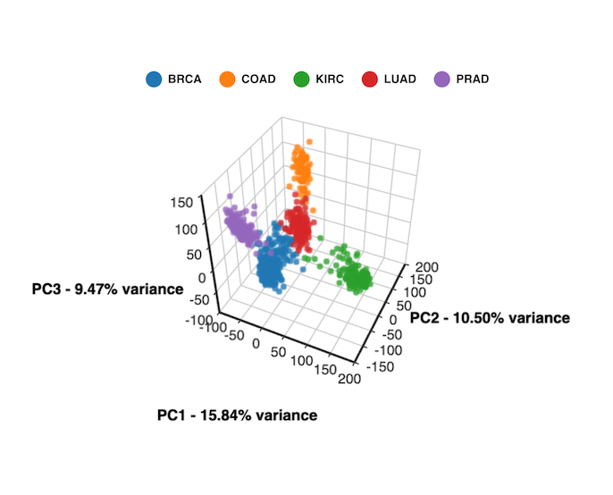
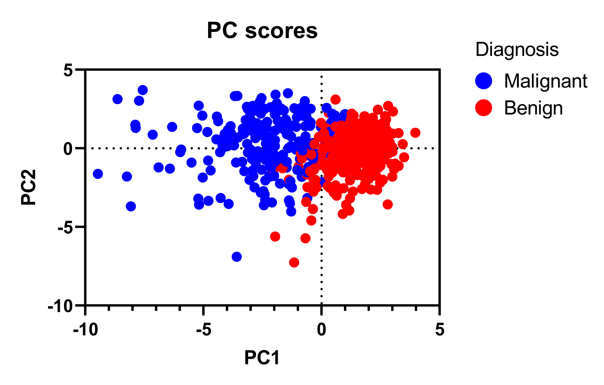

What is a Principal Component Analysis (PCA)?
Ed Yong, a British-American science journalist wrote on Twitter in 2012 the following:
There were a lot of great and funny answers!! For example, @richboden wrote "Something nerds do to show off and that the rest of us secretly don't understand but always look knowingly when it's mentioned." I can't say I totally disagree... However, the best answer that explained it completely and simplistically was this (from @holtchesley):
At the end of the day, that is what a PCA does. It takes all of these variables and the data associated, it reduces/simplifies the data, it plots the data, and it shows you where the most difference is in your dataset.
Definition
Below is a video created by Josh Starmer explaining and visualizing what a PCA is and how it works in 5 minutes!
In short, a PCA reduces the dimensions of a given dataset by transforming a large set of variables into smaller ones that still contains most of the information from the original dataset. Now, when a dataset is reduced, the tradeoff is a little accuracy for simplicity. Smaller datasets are much easier to explore, visualize, and analyze without unrelated and/or irrelevant variables to process. To sum it up, a PCA: reduces the number of variables in a dataset while preserving the most information, allowing you to see the most difference between relevant variables in a dataset.
Now, for a more in-depth explanation of a PCA, keep scrolling!
Step-by-step Explanation
Even if you don't have a strong mathematical background, this explanation is for you! Below, a PCA is broken down into the following 4 steps:
- Standarize the range of variables in your dataset.
- Calculate a covariance matrix to identify correlations.
- Calculate the eigenvectors and eigenvalues of the covariance matrix to identify principal components.
- Plot the data along the principal component axes.
1. Standarize the range of variables in your dataset.
It is important to standarize your dataset for a PCA for two reasons. One is so that each variable contributes equally to the analysis. The second is that if there are large differences between the ranges of variables, those variables with larger ranges will dominate over those with small ranges. This will lead to biased results.
Mathematically, this can be via the following equation for each variable:

Once the standardization is done, all the variables will be transformed to the same scale.
2. Calculate a covariance matrix to identify correlations.
This step allows us to how the variables of the dataset vary from the mean with respect to each other. Some variables may be highly correlated and some may be lowly correlated and to find out, a covariance matrix is created.
The covariance matrix is a p x p matrix (where p is the number of dimensions) that has the covariances associated with all possible pairs of the initial variables. For example, the dataset below shows a dataset with a group of students and the grades they received in various subjects.
To the right is a dataset and calculated covariance matrix (calculated via Microsoft Excel) that shows how the variables are related. In this case, the covariance between Sociology and Math is positive (1.33333), and the covariance between Math and Physics is positive (7.88889). This means that scores tend to covary in a positive way. As scores tend to go up in Math, scores in Sociology and Physics also tend to go up. On the hand, the covariance between Physics and Sociology is negative (-7.25). This means that scores tend to move in opposite directions. As scores go down in Sociology, scores in Physics tend to go up.
In short, what matters in this matrix?
THE SIGNS!- If the covariance is positive, the two variables increase or decrease together (correlated).
- If the covariance is negative, one variable increase (or decreases) when the other decreases (or increase) (inversely correlated).
3. Calculate the eigenvectors and eigenvalues of the covariance matrix to identify principal components.
Eigenvectors and eigenvalues are linear algebra concepts that need to be computed from the covariance matrix in order to determine the principal components. Therefore, they are essentially the stepping stones to where we want to go!
But... what are principal components?

Now that we understand principal components, let's get back to eigenvectors and eigenvalues!
Eigenvectors and eigenvalues ALWAYS come in pairs and there is one pair per dimenision within the dataset used for the PCA. For example, if you are using a dataset with 5 dimensions, there are 5 variables, 5 eigenvectors, and 5 corresponding eigenvalues.
- Eigenvectors: The numbers within the covariance matrix AND are the directions of the axes where there is the most variance and most information. We call these the Principal Components.
- Eigenvalues: The coefficients attached to the eigenvectors that give the amount of variance carried in each principal component.
Finally, in order to calculate the percentage of variance (y-axis of the scree plot & information), the eigenvalue of each component is divided by the sum of eigenvalues. Once placed in descending order (also known as a Feature Vector), you can find the principal components in order of significance, allowing you to choose whether to keep all the components or discard the ones of lesser significance, depending on what you are looking for.
4. Plot the data along the principal component axes.
From step 3, the goal is to reorient the data from the original axes to the ones represented by the principal components (hence the name Principal Components Analysis). This can be done by multiplying the transpose of the original data set by the transpose of the feature vector with the equation below.

Once performed, the principal component plot can be created. A few examples are shown below:
 
On the next page called "PCA Results", the results of the Marion County, IN water quality data from the MCPHD will be explained, visualized, and analyzed. The overall questions that will be answered are as followed:
- What is the overall quality of water in the White River, Eagle Creek, and Fall Creek based on the measured pollutants from 2003 until present?
- Are there different levels of pollutant concentrations in each of the waterways? For example, are there high nitrogen concentrations in the White River but low levels in Fall Creek?